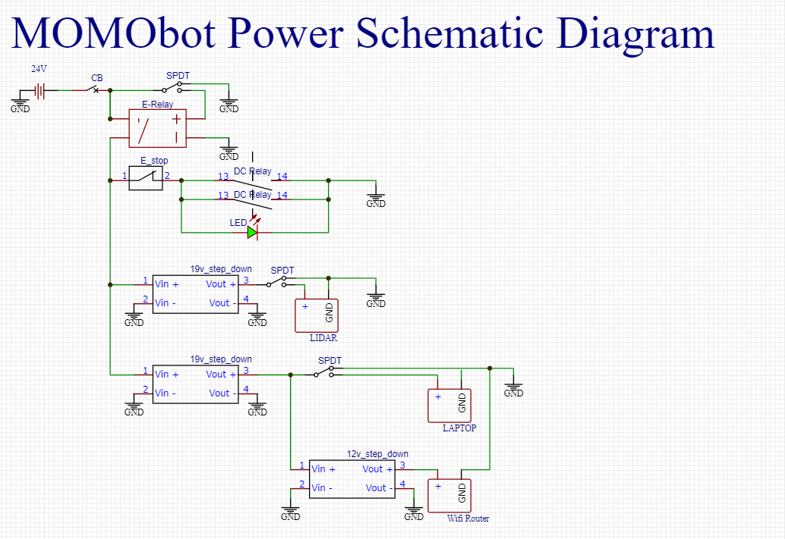

Electronics¶
It powers the controlling system, including the lidar, VESC, Teensy, laptop , router as well as two solid state relays Two solid state relays were used.
2.1 Electronic BOM¶
Power Source¶
2x 12V 55Ah Pb acid batteries (Connected in Series)
2x 12v 7Ah Pb acid batteries (Connected in Series)
Terminal Blocks for Power Distribution
3x el cheapo (Taobao) variable voltage Buck (literally worth the buck) Converter (replace pls) (current settings 2x 19V, 1x 12V)
Sensors¶
- 1x LMS111 LiDAR
20m range, 270 degree FOV
For obstacle detection, and mapping, for navigation
- Motor Encoders (Came With Motors)
Measure how far motors have turned, important for odometry
- GY-85 IMU
Important for Odometry, provides another source
Marvelmind Indoor GPS(Currently not in use, for a 3rd possible global pose data source)
Actuators, Display and Outputs¶
- 1x Waveshare 13.3” HDMI LCD (H) with case
- 2x Flipsky 50A Continuous VESC v4.12 (Using JST-PH)
Normal ESC did not work for our specced motor
- 350W 24V Brushless DC Scooter Hub Motor
Teensy 3.2 (Original from PJRC)
Cheap speakers
Safety and Power Control¶
1x Schnieder DC Circuit Breaker 125V 20A (2-way)
1x Schnieder DC Circuit Breaker 125V 16A (1-way)
2x CDG1-1DD/40A Solid State Relay
1x CDG1-1DD/25A Solid State Relay
Heat sinks
- 1x A22E-M E-stop
Application: Switch (Option, Others)
Conforming series: φ22/ 25 switch, indicator light
Type: Operating unit (non-illuminated type)
Details of shape: Medium type (φ40)
Colour: Red
Protection function: IP65 oil resistant type
Push button operation: Push to lock/turn to reset
Light Source Type: Non-Illumination
Voltage Uses Light Source(V): Non-Illumination
- 3x KR2-11 Rocker Switches (Red and Green)
Type: On/Off, DPST
Rating: 10A/250VAC
Mechanical life: 50,000 cycles
Insulation: 500MΩ
- 1x XK-A6/-Y Enclosure Electronics Box (E-box)
Enclosure types: Enclosure with 6 Ø22.5mm holes
Shell material:Plastic
IP grades:IP65
- 1x AD16-22D/S Green LED Pilot Light Panel Indicator
Voltage: 24V
Rated Current: 20mA
Material: Plastic, Electric Components
Thread Diameter: 22mm / 0.87”
1x Terminal Block (within the E-box)
Connectors¶
8x XT90 Connectors (Male and Female)
2x 6mm Barrel Jacks
Laptop power adapter
2.2 Start-Up, Shut-Down Procedure¶
Start-Up (FULL)¶
Check the battery leads and ensure that the batteries are connected in series
Electronics breakers to be Switched to “ON”
Set the Green electronics switch to “ON”
Motor Breakers to be switched to “ON”
Set the E-stop to “OFF”
Shut-down (FULL)¶
Set the E-stop to “ON”
Switch the Motor breakers to “OFF”
Set the electronics switch to “OFF”
Set the electronics breaker to “OFF”
Disconnect battery leads
Start-Up (truncated)¶
This assumes the batteries have been connected beforehand 1. Electronics switch to be set to “ON” 2. E-stop set to “OFF”
Shut-down (truncated)¶
E-stop set to “ON”
Electronics switch to be set to “OFF”
Disconnect the battery leads
2.3 Gotchas, Hacky Stuff and Things to Take Note Of¶
2x16AWG wires used to take high current out of battery, as we did not have thick enough wires at the time. The wire usage was not consistent, as some were salvaged PVC wires from the previous bot. Suggested to use all silicone coated wires with low gauge for higher termperature endurance and lower resistance.
Encoder and PWM input wires from Teensy to the VESC was connected using jumper cables rather than specific JST-PH connectors. Encoder wires were spliced to 2, one to VESC, one to teensy, causing a mess of wires and potential intermittent connections.
All bulk converter displayers are broken - they show a wrong voltage.
VESC can be better positioned to be easier USB tunned, and the layout should be revised for easier switch fliping.
No voltage monitoring circuit included in either of the two electrical system, making monitoring and preparing for recharge difficult. 19v for fully charged, 18.1v for need to charge. Circuit needed to be implemented to prevent either of the batteries from over-discharging.
The lack of a charging circuit made the life of the maintenance team difficult. Much more troubles of disconnecting the batteries for recharging and connecting back for operation
2.4 Circuit Diagrams¶
The robot consists of two power systems
24V with smaller battery capacity and 24V with bigger battery capacity
Both 2 cells in series to boost the voltage for the motors, as well as the lidar
Power¶

Electronics Schematic¶
{kind=link}
2.5 Motor Tuning¶
VESC tuning¶
Follow link for VESC tuning documentation - Flipsky VESC 4.12 Documentation
FOC signal¶
VESC also has internal PID control which is not modified in the original MOMObot because the PPM signals sent to the motors have been PID-ed in the ROS stack.
When tuning the PPM signal centre, max and min, ensure that the ROS stack is running.
The neutral signal will be the “centre”, max forward throttle will be “max” PPM and max reverse throttle “min” PPM.
The deadband of 10% is selected to allow MOMO to gain enough throttle to overcome initial traction.
A PPM deadband of < 2% is not recommended as it means any small fluctuation in PPM will command motor response.
3 days work tuning the settings
Read lots of guides for Duty settings - values that work After tuning the VESC’s PPM and Duty Cycle settings, remember to write the settings else they will not be saved.
Momo charges alot¶
Possible due to the I component of PID increasing when attempting to Pivot, then when transitioning to a forward movement, the built up I causes a surge in motor response.
Room for improvement¶
FOC profile can be improved (FOC settings , will have lots of variables to tune to fit the curve better)
Positive, negative ramping time
2.6 PID Tuning from the MOMObot side¶
Edit the config file
roscd momobot/teensy/firmware/lib/config/nano momo_base_config.hChange these parameters:
Differential drive
USE_ESC
Kp, Ki, Kd
Encoder pins, can be changed in hardware or code
Use the Linorobot PID tuning guide!